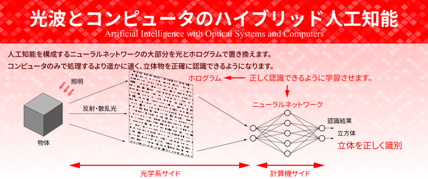

Japanese
|
English
トップ
メンバー
研究内容
研究業績

人工知能
光波とコンピュータの
ハイブリッド人工知能
ホログラム
究極の微細光学像を投影する
ホログラム
物体計測システム
物体の形状を推定する
計測システム
光・電波の散乱解析
シミュレーションの
高速化・高精度化
お知らせ
2021/01/21
電磁界理論研究会（光関係合同研究会）にて、逆散乱問題について発表を行いました。
【研究】
2020/11/05
電磁界理論シンポジウムにて、ハイブリッド人工知能について発表を行いました。
【研究】
2020/10/01
逆散乱問題についての論文が、論文誌Optics Expressに掲載されました。
【業績】
【研究】
2020/09/23
フォトンシーブホログラムについての論文が、論文誌Journal of Opticsに掲載されました。
【業績】
【研究】
2020/07/17
電磁界理論研究会（光・電波ワークショップ）にて、ハイブリッド人工知能について発表を行いました。
【研究】
Copyright © 数理波動システム研究室